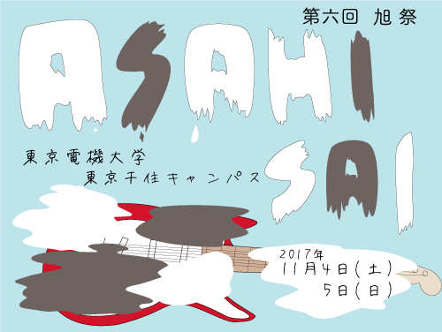

旭祭とは
東京電機大学東京千住キャンパスにて開催される学園祭のことです。
第6回旭祭について
第6回旭祭テーマ「Rock」
今年の旭祭が第6回ということで、その第6回とかけてROCKとつけました。
また、ROCKという単語の意味に「感動する」という意味があり、
今年の旭祭が感動できるものになればいいなという願いも込めてROCKにしました。
横断幕

この横断幕は、2号館1階にて展示される他、旭祭1日目に行われるパレードでお披露目されます。
ぜひご覧下さい！
開催情報
学園祭名称
第6回旭祭(あさひさい)
日時
1日目：2017年11月4日(土)10:00～17:00
2日目：2017年11月5日(日)10:00～16:00
場所
〒120-8551
東京都足立区千住旭町5
東京電機大学東京千住キャンパス
アクセス
「アクセス」よりご確認ください。
ホームページ